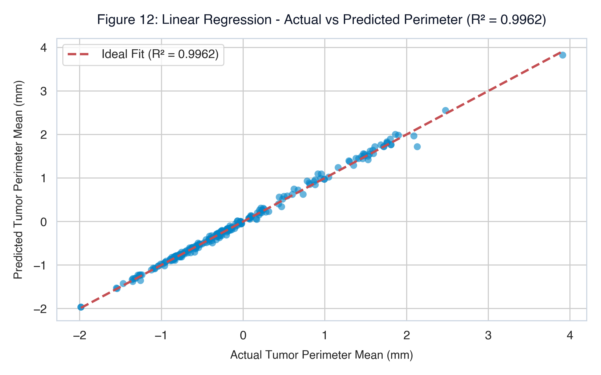

| Feature Family | Count | Key Cell Nucleus Attributes |
|---|---|---|
| Mean Features | 10 | `radius_mean`, `texture_mean`, `perimeter_mean`, `area_mean`, `smoothness_mean` |
| Standard Error (SE) | 10 | `radius_se`, `texture_se`, `perimeter_se`, `area_se`, `smoothness_se` |
| Worst (Largest) | 10 | `radius_worst`, `texture_worst`, `perimeter_worst`, `area_worst` |
| Target (Diagnosis) | 1 | `diagnosis` — Malignant (M) / Benign (B) |
• Benign (B): 714 cases (62.74%)
• Malignant (M): 424 cases (37.26%)
• Mild class imbalance observed; therefore, Accuracy is supplemented with Precision, Recall, and ROC-AUC.
 Zoom
Zoom
 Zoom
Zoom
 Zoom
Zoom
 Zoom
Zoom
In the Area Mean box plot, malignant tumors display points stretching up to 2,500 $\text{mm}^2$. These are not measurement errors; they represent genuine aggressive tumor proliferation where high nuclear surface area is a biological hallmark of advanced cellular dysplasia.
 Zoom
Zoom
 Zoom
Zoom
Redundant Features Dropped: `perimeter_mean` ($r = 0.998$ with radius) and `area_mean` ($r = 0.987$ with radius). Keeping all three introduces variance inflation and corrupts coefficient weights.
Orthogonal Retained Predictors: `texture_mean` operates orthogonally to geometric size ($r \approx 0.32$), providing complementary diagnostic discrimination.
 Zoom
Zoom
| Class | Precision | Recall | F1-Score | Support |
|---|---|---|---|---|
| Benign (0) | 0.95 | 0.95 | 0.95 | 152 |
| Malignant (1) | 0.91 | 0.89 | 0.90 | 76 |
| Overall Accuracy | 93.42% (213 / 228 correct) | |||
Out of 76 actual malignant cases in the test set, 68 were correctly detected at the standard threshold, giving an 89.5% recall, with a high precision of 91% preventing unnecessary patient alarm.
 Zoom
Zoom
An AUC score of 0.9887 indicates a 98.87% probability that the model will rank a randomly chosen malignant sample higher than a randomly chosen benign sample.
Because the test set exhibits mild class imbalance (66.7% Benign vs 33.3% Malignant), simple accuracy can hide sensitivity trade-offs. The near-perfect AUC curve confirms that the classifier does not merely guess the majority class.
| Model | Accuracy | Precision | Recall | F1 |
|---|---|---|---|---|
| Random Forest | 99.12% | 100.0% | 97.65% | 98.81% |
| Decision Tree | 97.81% | 98.78% | 95.29% | 97.01% |
| Logistic Regression | 93.42% | 91.00% | 89.47% | 90.22% |
While Random Forest achieves 99.12% raw accuracy, it is a complex non-linear ensemble. In regulatory healthcare environments (FDA / CE guidelines), Logistic Regression remains the clinical benchmark because every feature has a transparent weight.
 Zoom
Zoom
 Zoom
Zoom
 Zoom
Zoom

ZoomEven without providing labels (`diagnosis`), unsupervised K-Means ($K=2$) partitioned the data into clusters that overlap with true clinical diagnoses by over 88%, confirming that tumor geometry inherently segregates into two distinct biological modes.